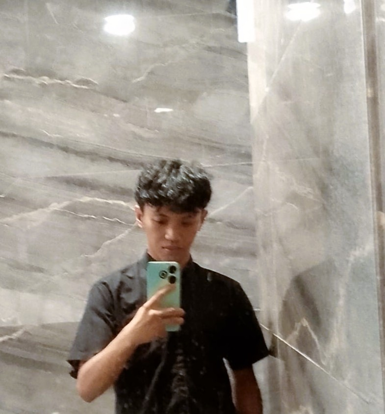

|
My Blog & Journey
My Goals
-
Menjadi seorang profesional di bidang Cyber Security
-
Mengembangkan Artificial Intelligence (AI) buatan sendiri
- Membangun sistem berbasis Blockchain
-
Mengembangkan solusi teknologi yang bermanfaat bagi
masyarakat
Tentang Saya
Saya adalah seorang mahasiswa Teknik Informatika yang memiliki
minat besar dalam dunia teknologi, terutama dalam bidang Cyber
Security, Artificial Intelligence, dan Blockchain.
Ketertarikan ini muncul dari rasa ingin tahu saya terhadap
bagaimana sistem bekerja, bagaimana data dapat diamankan,
serta bagaimana teknologi dapat memberikan solusi nyata
terhadap berbagai permasalahan di dunia digital.
Saya juga memiliki ketertarikan untuk terus belajar dan
mengembangkan kemampuan, baik melalui perkuliahan maupun
eksplorasi mandiri. Bagi saya, dunia teknologi bukan hanya
sekadar bidang studi, tetapi juga merupakan ruang untuk
berinovasi dan menciptakan sesuatu yang bermanfaat.
Di luar bidang akademik, saya memiliki hobi bermain game yang
tidak hanya menjadi sarana hiburan, tetapi juga melatih cara
berpikir strategis, pengambilan keputusan, serta kemampuan
problem solving dalam berbagai situasi.
Selain itu, saya juga menyukai dunia musik, khususnya bermain
piano dan gitar. Dalam bermain piano, meskipun saya masih
dalam tahap belajar, saya merasakan pengalaman yang sangat
mendalam, di mana saya dapat benar-benar tenggelam dalam
keindahan melodi yang dimainkan. Setiap nada memberikan
perasaan yang berbeda dan membuat saya lebih menghargai seni
dalam bentuk yang sederhana namun bermakna.
Begitu juga dengan gitar, yang memberikan pengalaman berbeda
melalui harmoni dan ritme yang dapat saya eksplorasikan.
Bermain gitar bagi saya bukan hanya sekadar hobi, tetapi juga
menjadi media untuk mengekspresikan diri dan menyalurkan emosi
melalui alunan musik.
Dengan keseimbangan antara minat di bidang teknologi dan hobi
dalam dunia musik serta game, saya berusaha untuk terus
berkembang menjadi pribadi yang tidak hanya memiliki kemampuan
teknis, tetapi juga kreativitas dan cara berpikir yang luas.
Articles
Belajar HTML Tanpa CSS
Belajar HTML tanpa CSS merupakan pengalaman yang cukup
menantang bagi saya. Dalam proses ini, saya menyadari bahwa
tampilan website sangat bergantung pada struktur yang baik.
Walaupun terbatas, saya mencoba memaksimalkan penggunaan
elemen HTML untuk tetap menghasilkan tampilan yang rapi dan
nyaman dilihat.
Ketertarikan Saya pada Cyber Security
Cyber Security menjadi salah satu bidang yang menarik
perhatian saya karena berkaitan langsung dengan keamanan data
dan sistem. Saya tertarik untuk memahami bagaimana suatu
sistem dapat dilindungi dari serangan serta bagaimana celah
keamanan dapat ditemukan dan diperbaiki.
Perjalanan Belajar Teknologi
Perjalanan saya dalam mempelajari teknologi masih panjang,
namun setiap langkah memberikan pengalaman baru yang berharga.
Saya percaya bahwa konsistensi dalam belajar akan membawa saya
menuju tujuan yang ingin saya capai.
|
|